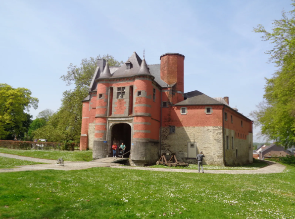

Défi chez Cathy Rose du 24 août2026
Voici ma participation aux collections de Cathy sur le blog :
Aux gré de mes balades

Château-Forteresse de Trazegnies (Belgique – Courcelles) – XIᵉ siècle
Thème du jour : Mairies ou châteaux
Photo choisie pour le défi du 24 août 2026